前面的代码中，测试流程第一步都是获取授权码，然后再携带授权码去申请令牌，授权码示例如下：
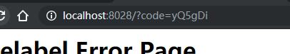
产生的授权码默认是 6 位的，产生以后并没有做任何管理，可以说是一个临时性的授权码，oauth2也提供了将授权码使用jdbc进行管理的功能，首先在数据库中创建表 oauth_code ：
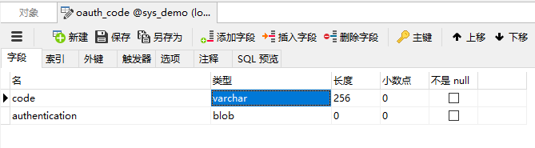
code：存储服务端系统生成的code的值(未加密)
authentication：存储将AuthorizationRequestHolder.java对象序列化后的二进制数据.
然后创建bean JdbcAuthorizationCodeServices：
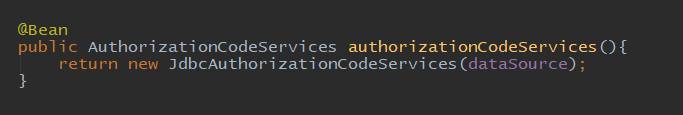
最后在endpoints 中配置 authorizationCodeServices 方法：
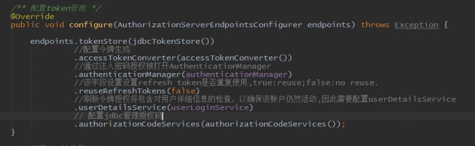
这样配置就完成了，我们重启项目，多申请几个授权码，可以看到数据库中有授权码的保存记录：
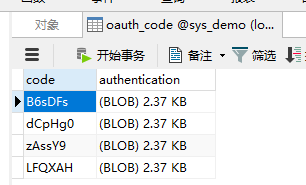
授权码是6位随机的字符串，可以有人会觉得不安全，希望长一些。我们可以自定义 AuthorizationCodeServices ：
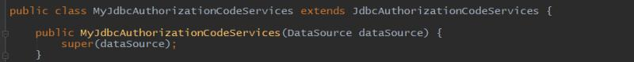
在原来的 JdbcAuthorizationCodeServices 中，授权码的生成是其父类 RandomValueAuthorizationCodeServices 生成的，使用的是 RandomValueStringGenerator 类，这个类默认的构造器使用的就是6位长度：
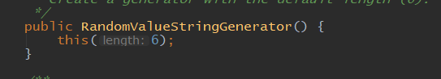
不过类中也包含了自定义长度的构造器：
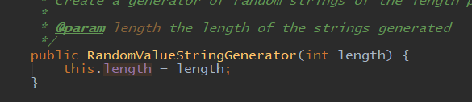
因此我们可以在自定义的类中自定义长度：
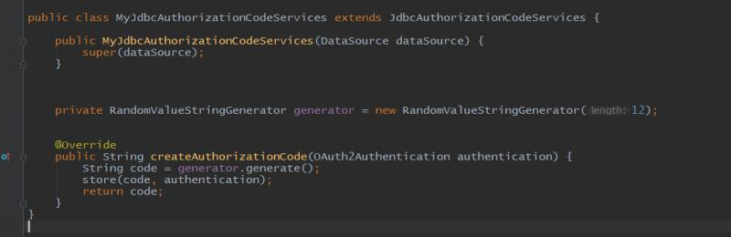
然后将自定义的bean修改为自定义的类：
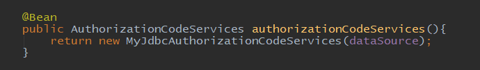
看一下授权码变长后的效果：
来看一下授权码管理的实现类有哪些：
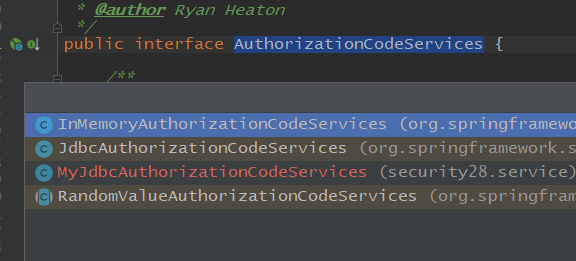
只有内存模式和jdbc模式，如果想实现redis模式，需要自己去实现接口或者继承 RandomValueAuthorizationCodeServices 类，这里不再演示。
代码地址：https://gitee.com/blueses/spring-boot-security 28
本文由博客一文多发平台 OpenWrite 发布！